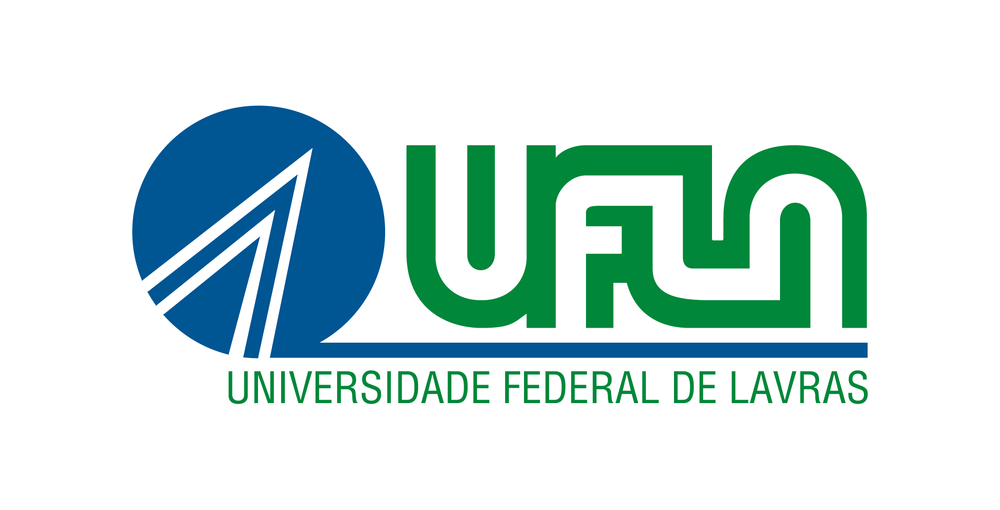
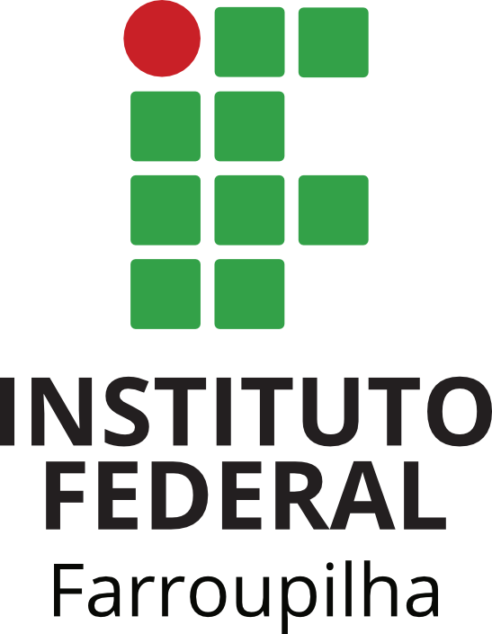

Organizadores


Gestão Universitária Sustentável: A Importância de Estruturas Dedicadas
Inscreva-se Agora
09 de dezembro de 2025 – das 14h às 17h
10 de dezembro de 2025 – das 14h às 17h
O evento será transmitido ao vivo pelo canal oficial da Rede IES Sustentável no YouTube.
O II Workshop de Sustentabilidade para Instituições de Ensino Superior tem como propósito promover o intercâmbio de experiências e estratégias de gestão institucional voltadas à sustentabilidade.
O evento destaca a relevância de estruturas formais — como diretorias, comissões e núcleos — responsáveis por planejar e consolidar ações permanentes que integrem o desenvolvimento sustentável à rotina das universidades e institutos federais.
SESU/MEC
Diretora de Desenvolvimento da Rede de Instituições Federais de Educação Superior.
SETEC/MEC
Diretor de Articulação e Fortalecimento da EPT da Secretaria de Educação Profissional e Tecnológica.
TCU
Auditor Federal de Controle Externo do Tribunal de Contas da União, atualmente Diretor da 4ª Diretoria Técnico.
UFLA
Coordenador geral da comissão organizadora do "WORKSHOP DE SUSTENTABILIDADE DE IES: PLANO DIRETOR DE LOGÍSTICA SUSTENTÁVEL NAS INSTITUIÇÕES DE ENSINO SUPERIOR"
Especialista em Gestão Sustentável
Pós-Graduada em Meio Ambiente e Sustentabilidade (FGV), graduada em Comunicação Social (UNICEUB), especialista em gestão sustentável.
Pesquisador e Professor
Doutor em Engenharia de Produção e Sistemas pelo CEFET/RJ, autor do livro Sustentabilidade em Compras Públicas.
IFPA
Doutora em Engenharia Civil pela Universidade Federal do Ceará (UFC), professora do Instituto Federal de Educação, Ciência e Tecnologia do Pará.
Senado Federal
Especialista em ESG com vasta experiência na implementação de práticas sustentáveis no setor público.
Pesquisadora
Especialista em relatórios de sustentabilidade e gestão ambiental em instituições de ensino superior.
UnB
Responsável pelo Plano de Logística Sustentável da Universidade de Brasília.
UNIFESP
Doutoranda em Engenharia Ambiental pela Universidade Federal de Santa Catarina. Coordenadora do PLS-Unifesp.
IFPA
Mestre em Geociências pela Universidade Federal Fluminense. Docente do Ensino Básico, Técnico e Tecnológico no IFPA.
UFPR
Auditora da UFPR, Bacharel em Direito, Pós-Graduação em Direito Público e Direito Digital e Mestrado em Processo Civil.
Moderador
Especialista em sustentabilidade institucional e gestão de projetos ambientais.
Moderador
Profissional especializado em políticas públicas de sustentabilidade e gestão ambiental.
O evento será realizado totalmente online, com transmissão pelo canal oficial da Rede IES Sustentável no YouTube.
YouTube: @RedeIesSustentável
Convidamos os membros das instituições que atuam nas áreas de sustentabilidade, governança, meio ambiente, energia, água, gestão de resíduos, bem como demais interessados na temática.
Os participantes que realizarem a inscrição e acompanharem o evento receberão certificado de participação.
As inscrições devem ser realizadas por meio do SIG-UFLA. Siga o passo a passo abaixo:
O I Workshop de Sustentabilidade para IES, realizado em dezembro de 2024, atraiu mais de 200 participantes de diversas instituições de ensino superior do Brasil. O evento contou com painéis especializados abordando desde os fundamentos da sustentabilidade universitária até práticas inovadoras de gestão ambiental em IES.
O workshop surgiu da necessidade de criar uma rede colaborativa entre as instituições de ensino superior brasileiras, conectando pessoas, experiências, poder público, academia, organizações sociais e meio ambiente. A primeira edição estabeleceu as bases para o que viria a se tornar uma das principais conferências sobre sustentabilidade universitária do país.
Em caso de dificuldades no cadastro ou na inscrição, entre em contato com a equipe organizadora: